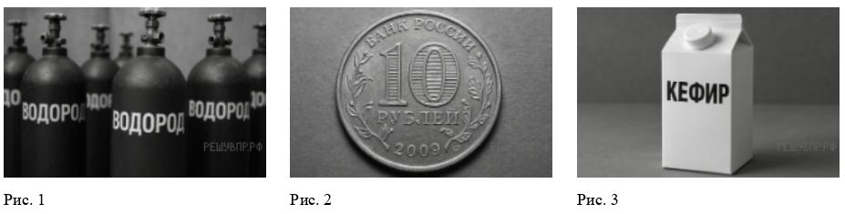
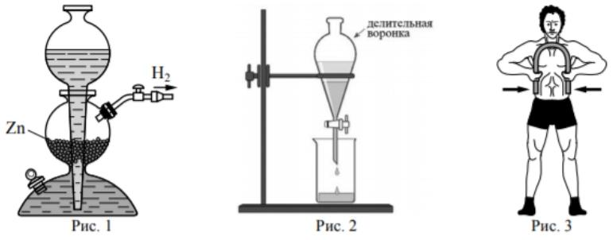
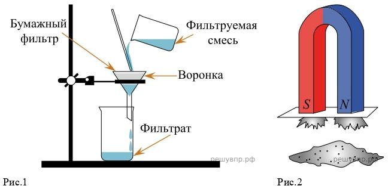

[ ДОСТУП ОГРАНИЧЕН ДЛЯ ПОСТОРОННИХ ]
Укажите номер рисунка, на котором изображён объект, содержащий индивидуальное химическое вещество.

Какие вещества содержатся в объектах на остальных рисунках? Приведите по одному примеру названия и формулы.
Из представленных ниже рисунков выберите тот, на котором изображено протекание химической реакции:

Укажите один ЛЮБОЙ признак протекания этой химической реакции.
Вычислите молярные массы каждого из газов и запишите данные в таблицу.
Какой из приведённых в таблице газов имеет при заданных условиях такую же плотность, как и азот N2, молярная масса которого равна 28 г/моль? Укажите номер вещества.
Заполните характеристики элементов А и В. Известно, что в атоме элемента А содержится 14 протонов, а в атоме элемента В — 20 протонов.
Настя привезла домой банку с морской водой. В школьной лаборатории она налила 250 г морской воды и упарила её. Масса твёрдого остатка солей составила 2,75 г. Используя таблицу, определите, на каком море отдыхала Настя.
Какую массу твёрдого остатка солей должна была бы получить Настя при упаривании пробы морской воды массой 250 г, если бы она отдыхала на Мраморном море, солёность которого составляет 2,6%? Ответ округлите до десятых.
Напишите химические формулы следующих веществ: натрий, хлор, хлорид натрия, нитрат магния, гидроксид калия, нитрат калия, гидроксид магния.
Какое из веществ, упоминаемых в перечне, соответствует описанию: «Мягкий металл серебристо-белого цвета, легко режется ножом»?
Из данного перечня выберите ЛЮБОЕ СЛОЖНОЕ вещество, НЕ СОДЕРЖАЩЕЕ атомов щелочных металлов. Запишите название этого вещества и укажите класс неорганических соединений.
Из приведённого перечня веществ выберите ЛЮБОЕ соединение, состоящее из атомов ТРЁХ элементов. Вычислите массовую долю кислорода в этом соединении. Ответ округлите до десятых.
Вычислите массу 0,6 моль газообразного хлора. Ответ запишите в граммах, округлив до десятых.
Составьте уравнения указанных реакций, используя химические формулы веществ из п. 6.1 (задание 10). Используйте знак равенства (=) вместо стрелки. Вводите уравнения без пробелов.
железо + сера → сульфид железа(II)
гидроксид кальция + азотная кислота → нитрат кальция + вода
Определите тип химической реакции для любого (одного) из выбранных вами уравнений из задания 15.
Из приборов, изображённых на рисунках, выберите тот, с помощью которого можно разделить смесь железных опилок и порошка серы.

Установите соответствие между названием химического вещества и областью его применения. Выберите правильную цифру применения для каждого вещества.
Выберите верные суждения о правилах поведения в химической лаборатории и обращении с химическими веществами в быту. (Выберите все подходящие варианты).
Ваша итоговая оценка за ВПР-8 (Вариант 2):
Данные успешно отправлены профессору на сервер Google Forms.